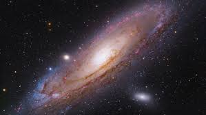

Guia das galaxias

Galaxia de Andromeda
a galaxia de andromeda (messier 31, NGC 224) e uma galaxia espiral localizada a cerca de 2,54 milhões de anos-luz de distancia da terra, na direção da constelação de Andromeda
Fatos interessantes
- Alem da Via lactea, e a galaxianmais estudada
- Suas duas galaxias satelite, Messier 32 e Messier 110, são visiveis em binoculos
- Sua distancia em relação a terra aindanão foi bem definida
Outras galaxias , Magalhães olho negro